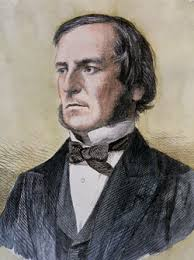

Boole was given his first lessons in mathematics by his father, a tradesman, who also taught him to
make
optical instruments. Aside from his father’s help and a few years at local schools, however, Boole
was
self-taught in mathematics. When his father’s business declined, George had to work to support the
family. From the age of 16 he taught in village schools in the West Riding of Yorkshire, and he
opened
his own school in Lincoln when he was 20. During scant leisure time he read mathematics journals in
the
Lincoln’s Mechanics Institute. There he also read Isaac Newton’s Principia, Pierre-Simon Laplace’s
Traité de mécanique céleste, and Joseph-Louis Lagrange’s Mécanique analytique and began to solve
advanced problems in algebra.
Boole submitted a stream of original papers to the new Cambridge Mathematical Journal, beginning in
1839
with his “Researches on the Theory of Analytical Transformations.” These papers were on differential
equations and the algebraic problem of linear transformation, emphasizing the concept of invariance.
In
1844, in an important paper in the Philosophical Transactions of the Royal Society for which he was
awarded the Royal Society’s first gold medal for mathematics, he discussed how methods of algebra
and
calculus might be combined. Boole soon saw that his algebra could also be applied in logic.

George Boole
English mathematician
Teaching
Contribution
- Boolean Algrebra
- Boolean algebra is a division of mathematics that deals with operations on logical values and
incorporates
binary variables. Boolean algebra traces its origins to an 1854 book by mathematician George Boole.
The distinguishing factor of Boolean algebrais that it deals only with the study of binary variables. Most commonly Boolean variables are presented with the possible values of 1 ("true") or 0 ("false"). Variables can also have more complex interpretations, such as in set theory. Boolean algebra is also known as binary algebra.